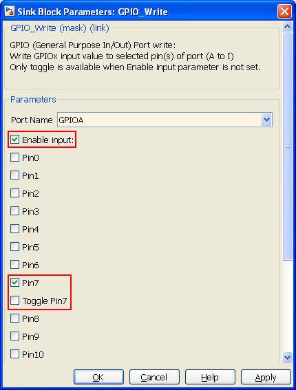

GPIO Write model
Model used to write 16bits value to STM32F4 port (A to I).
GPIOx Config must be done.
Contents
S-Function
Nb Input: 0 or 1 x 16bits depending on Enable input parameter Named: In
Nb Output: 0

Parameters
Port Name
Name of Port to read. (Port A to I)

Enable input
Write In 16bits value to enabled pins of selected port.

Example
GPIO port read example.
This example is based on STM3240G-EVAL board.
Read PortC, PortG and PortI 16bit value.
XOR with Led corresponding bit and write back to Port.
- PC7 : Blue Led
- PG6 : Green Led
- PG8 : Orange Led
- PI9 : Red Led

Read selected port 16bit value
Write compute 16bit value to selected port. Enable input = Input 16bit value.
